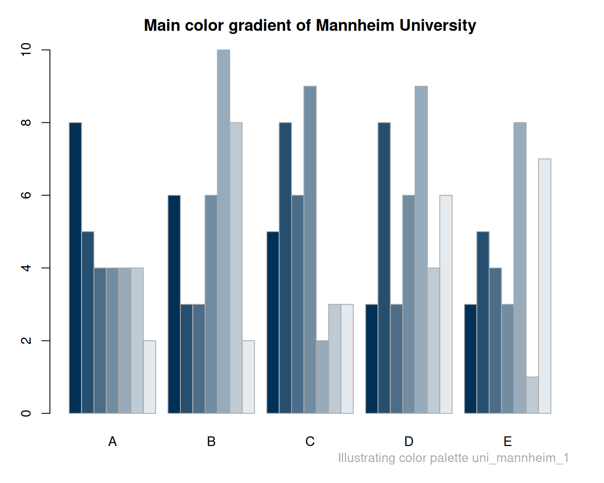

uni_mannheim_1 provides a color gradient of
the primary blau color and six lighter shades
of the University of Mannheim, Germany.
Source
Color definitions are based on https://www.uni-mannheim.de/cd/marke/farben/.
Details
The primary color UM blau is alternatively defined as
RGB 0/48/86, HEX #003056, Pantone 654, CMYK 100/60/10/60, or RAL 5011.
The six lighter shades were created by mixing the primary UM blau with "white".
See the ac and usecol functions for creating color gradients.
See also
uni_mannheim_2 provides the primary and accent colors of the University of Mannheim;
seecol for viewing and comparing color palettes;
usecol for using color palettes;
simcol for finding similar colors;
newpal for defining new color palettes;
grepal for finding named colors.
Other university color palettes:
UCLA_1,
UCLA_2,
UCLA_3,
UCSD_1_core,
UCSD_2_accent,
UCSD_3_neutral,
eth_1,
eth_2,
eth_3,
example_1,
fu_0,
fu_1,
fu_2,
fu_3,
hu_1,
hu_2,
lancaster_1,
lancaster_2,
laval,
limerick_1,
lmu_1,
lmu_2,
lmu_3,
manchester_uni_1,
manchester_uni_accent,
manitoba_1,
manitoba_2,
mcgill_brights,
mcgill_darks,
mcgill_grey,
mcgill_muted,
mcgill_pastels,
mcgill_red,
mcmaster_brighterworld,
mcmaster_heritage,
michigan_1,
michigan_2,
minnesotatwin_2,
mit,
mpg,
msu,
northwestern_1,
northwestern_2,
notredame_1,
nyu_1,
nyu_2,
nyu_accent,
nyu_neutral,
oxford_blog,
oxford_brand,
oxford_error,
oxford_general,
oxford_graduate,
oxford_link,
oxford_shades,
oxford_socialmedia,
pitt_1,
pitt_2,
princeton_0,
princeton_1,
princeton_2,
queens_1,
queens_2,
rpi_1,
rpi_2,
rpi_3,
rptu,
sfu_brand,
standrews_1,
standrews_2,
stanford_1,
stanford_2_accent,
stanford_3_web,
ucalgary_accent,
ucalgary_primary,
ucalgary_secondary,
ucalgary_warmgreys,
umass_2,
umass_brand,
umass_neutrals,
uni_bonn_1,
uni_bonn_2,
uni_freiburg_0,
uni_freiburg_1,
uni_freiburg_2,
uni_freiburg_blue,
uni_freiburg_br,
uni_freiburg_grey,
uni_freiburg_info,
uni_goettingen_1,
uni_goettingen_2,
uni_goettingen_3,
uni_hamburg_1,
uni_hamburg_2,
uni_heidelberg_1,
uni_jena_1,
uni_jena_2,
uni_kiel_1,
uni_kiel_2,
uni_koeln_1,
uni_koeln_2,
uni_konstanz_1,
uni_konstanz_2,
uni_lisbon,
uni_manchester_1,
uni_mannheim_2,
uni_regensburg_1,
uni_regensburg_2,
uni_regensburg_3,
uni_stuttgart_1,
uni_stuttgart_2_print,
uni_ulm_1,
uni_ulm_2,
upenn_1,
upenn_2,
uwaterloo_arts,
uwaterloo_engineering,
uwaterloo_environment,
uwaterloo_health,
uwaterloo_main,
uwaterloo_math,
uwaterloo_science,
vanderbilt_1,
vanderbilt_3,
waikato,
western_uni_1,
yale_1,
yeshiva,
york_1,
york_2
Examples
uni_mannheim_1
#> UM blau blau 85% blau 70% blau 55% blau 40% blau 25% blau 10%
#> "#003056" "#264F6F" "#4C6D88" "#728DA2" "#98ABBB" "#BECBD4" "#E5EAEE"
unikn::seecol(uni_mannheim_1, main = "Main color gradient of the University of Mannheim")
unikn::demopal(uni_mannheim_1, type = 1,
main = "Main color gradient of Mannheim University")
